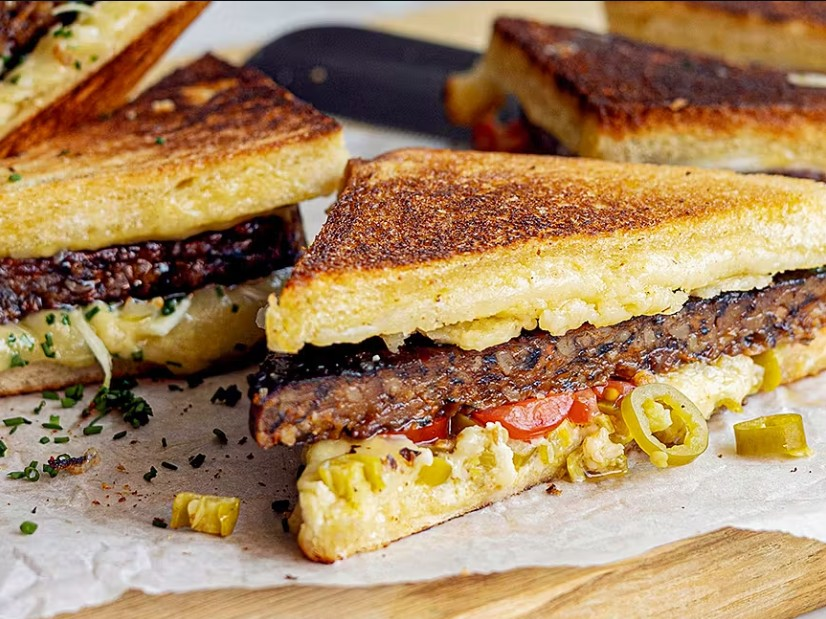

Ingredients
- 1 kg (2.2 lbs) chicken thighs, boneless and skinless, cut into chunks
- 2 tablespoons olive oil
- 1 large onion, diced
- 3 carrots, sliced
- 3 celery stalks, chopped
- 4 cloves garlic, minced
- 2 tablespoons all-purpose flour
- 500ml (2 cups) chicken stock
- 200ml (3/4 cup) heavy cream
- 2 bay leaves
- 1 teaspoon dried thyme
- 1 teaspoon paprika
- Salt and black pepper to taste
- Fresh parsley for garnish
- 300g (10 oz) small potatoes, halved
Cooking Instructions
- Heat olive oil in a large pot or Dutch oven over medium-high heat.
- Season chicken chunks with salt and pepper, then brown them on all sides (about 5-6 minutes). Remove and set aside.
- In the same pot, add diced onion and cook until softened, about 3 minutes.
- Add carrots, celery, and garlic. Cook for another 3-4 minutes until vegetables start to soften.
- Sprinkle flour over the vegetables and stir well. Cook for 1 minute to remove raw flour taste.
- Gradually add chicken stock while stirring constantly to prevent lumps.
- Add bay leaves, thyme, paprika, and halved potatoes. Bring to a boil.
- Return the browned chicken to the pot and reduce heat to low. Simmer covered for 25-30 minutes.
- Stir in heavy cream and simmer for an additional 5 minutes until sauce thickens.
- Taste and adjust seasoning with salt and pepper as needed.
- Remove bay leaves and garnish with fresh chopped parsley before serving.
- Serve hot with crusty bread or lingonberry sauce on the side.
Perfect Pairings
This hearty stew pairs wonderfully with warm open-faced sandwiches (varmamackor) and a simple side salad. The combination makes for a complete and satisfying Swedish meal!